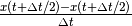
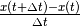

FunctionTransformWithFiniteDifference¶
-
class
astropy.coordinates.FunctionTransformWithFiniteDifference(func, fromsys, tosys, priority=1, register_graph=None, finite_difference_frameattr_name='obstime', finite_difference_dt=<Quantity 1.0 s>, symmetric_finite_difference=True)[source] [edit on github]¶ Bases:
astropy.coordinates.FunctionTransformA coordinate transformation that works like a
FunctionTransform, but computes velocity shifts based on the finite-difference relative to one of the frame attributes. Note that the transform function should not change the differential at all in this case, as any differentials will be overridden.When a differential is in the from coordinate, the finite difference calculation has two components. The first part is simple the existing differential, but re-orientation (using finite-difference techniques) to point in the direction the velocity vector has in the new frame. The second component is the “induced” velocity. That is, the velocity intrinsic to the frame itself, estimated by shifting the frame using the
finite_difference_frameattr_nameframe attribute a small amount (finite_difference_dt) in time and re-calculating the position.Parameters: finite_difference_frameattr_name : str or None
The name of the frame attribute on the frames to use for the finite difference. Both the to and the from frame will be checked for this attribute, but only one needs to have it. If None, no velocity component induced from the frame itself will be included - only the re-orientation of any exsiting differential.
finite_difference_dt :
Quantityor callableIf a quantity, this is the size of the differential used to do the finite difference. If a callable, should accept
(fromcoord, toframe)and return thedtvalue.symmetric_finite_difference : bool
If True, the finite difference is computed as , or if False, . The latter case has slightly better performance (and more stable finite difference behavior).
All other parameters are identical to the initializer for
`FunctionTransform`.
Attributes Summary
finite_difference_frameattr_nameMethods Summary
__call__(fromcoord, toframe)Attributes Documentation
-
finite_difference_frameattr_name¶
Methods Documentation
-
__call__(fromcoord, toframe)[source] [edit on github]¶
-